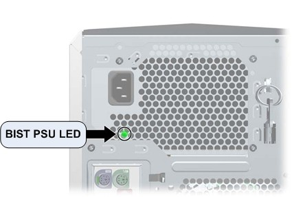

Operating Documentation
Direction 5321294, Rev# 3
GOC6 Service Methods
Operating Documentation |
| Last Revised: | 27 June 2008 |
The follow information assists in confirming if the HP xw8400 Host PC is experiencing a hardware fault. Although the following is not a complete set of diagnostics, it should be sufficient in determining if the xw8400 is suffering from hardware issues at the prescribed Field Replaceable Unit (FRU) level.
Obtain complete diagnostic details for the HP xw8400 PC from Hewlett Packard’s support web site: http://welcome.hp.com/country/us/en/support.html
Search by PC model number and download the appropriate Technical Reference Guide.
| NOTE: | HP also supplies a software diagnostic CD-ROM (HP Insight Diagnostics) to use to confirm that the Host PC failed. Please note that these diagnostics only test the base hardware configuration (systemboard, memory, etc.) of the xw8400 PC. Add-in cards (Graphics, Ethernet, SCSI Controller, etc.) are not tested. |
| ELECTROCUTION HAZARD | |
| THERE IS POWER TO THE SYSTEM BOARD EVEN WHEN THE HOST PC IS POWERED DOWN. | |
| per PROPER LOCKOUT / TAGOUT PROCEDURES, Disconnect AC power from the Host PC before reseating or replacing components. |
Before proceeding with the rest of this procedure, use the following checklist to find possible solutions for Host PC problems:
Are the Host PC and Monitors connected to a working electrical outlet?
Is the Host PC powered on?
Is the front panel green power light illuminated?
Are the monitors powered on?
Are the green monitor lights illuminated?
Adjust the monitor brightness and contrast controls if the monitor is dim.
Press and hold any key. If the Host PC beeps, then the keyboard is operating correctly.
Examine all cables for loose or incorrect connections.
Remove all diskettes and CDs from the drives before you power on the system.
Are you running the latest BIOS version and have correct BIOS Settings?
The xw8400 has a special LED mounted just inside the PSU rear ventilation grill. When the Built In Self Test (BIST) LED is green, the PSU is operational. (See Illustration 1.)
Illustration 1: BIST PSU LED

Table 1: xw8400 Power Supply Problems (BIST LED)
| Problem | Cause | Solution |
| Power supply shuts down intermittently. | Power supply fault | Replace Host PC. |
| Workstation powered off automatically and the Power LED flashes red two times, once every second, followed by a two-second pause. | Processor thermal protection activated OR Fan(s) blocked or not turning OR CPU heatsink fan assembly not properly attached to the processor |
|
| Power LED flashes red, once every two seconds. | Power failure (power supply overloaded) |
|
Observe these conditions over time. If this situation repeats regularly, the Host PC’s PSU or hardware is faulty. Replace the Host PC FRU. If these conditions happen rarely, look for Power and AC connection issues.
The Power LED above the Power On/Off button has the following states:
| Color | Host PC State |
| None | Off OR Hibernate(not used) |
| Solid Green | On |
| Flashing Green (once per second) | Standby (not used) |
| Solid or Flashing Red | Error |
Table 2: xw8400 Front Panel Power LED and Beep Code
| Power LED and Sound Activity | Diagnosis and Service Action |
| None | Power supply failure
|
| Blinks red 2 times, once per second, then 2 second pause, 2 beeps | Thermal shutdown
|
| Blinks red 3 times, once per second, then 2-second pause, 3 beeps | CPU not installed
|
| Blinks red 4 times, once per second, then 2 second pause, 4 beeps | Power supply failure
|
| Blinks red 5 times, once per second, then 2 second pause, 5 beeps | Pre-video memory error
|
| Blinks red 6 times, once per second, then 2 second pause, 6 beeps | Pre-video graphics card error. For systems with graphics cards, do the following:
|
| Blinks red 7 times, once per second, then 2 second pause, 7 beeps. | System board failure (ROM detected failure before video).
|
| Blinks red 8 times, once per second, then 2 second pause, 8 beeps | Invalid ROM based on bad checksum
|
| Blinks red 9 times, once per second, then 2 second pause, 9 beeps | System power is on but unable to boot. Replace the Host PC. |
The Disk Activity LED below the Power On/Off button flickers whenever the system is accessing either hard drive.
The network activity LEDs at the rear of the Host PC chassis (including both the onboard network port and the two Dual Port GBe card ports) flicker whenever there is network activity on that port. These LEDs remain a solid light as long as the system is plugged into AC power with the power switch on and connected to other live Ethernet ports.
POST is a program run at startup that initializes and runs various tests on installed hardware. An audible and/or visual message occurs if the POST encounters a problem.
All errors are reported on the POST screen at the end of POST, before booting the OS. If there are any Fatal or Uncorrectable Non-Fatal errors reported, you are presented with an F1 Boot prompt. This ensures that the system doesn't boot before you are able to see the errors.
| NOTE: | The errors displayed are from the previous boot. They occurred before the most recent reboot, or they caused the most recent reboot. |
There are several ways to control allowable errors and their results. For each error, there are three actions you can perform:
Mask and ignore the error.
Log the error in an error status register, but don't generate an Err0 signal.
Log the error in an error status register, and do generate an Err0 signal.
There are two types of non-fatal errors. Both types are logged, but masked so that they do not generate an Err0 signal. The type of error determines how it is handled from that point on:
Correctable errors are only reported if you selected the option to force an F1 Boot prompt on recoverable errors in the BIOS Configuration Utility (F10) under Advanced > Power-On Options. The default does NOT force an F1 prompt.
Uncorrectable errors automatically force an F1 Boot prompt on the next reboot.
Fatal errors are not masked. When fatal errors are detected, they generate an Err0 signal.
POST checks the following items to ensure that the workstation system is functioning properly:
Keyboard
Memory modules
Diskette drives
All SATA, IDE, and SAS mass storage devices
Processors
Controllers
Table 3: xw8400 POST Error Messages
| Screen Message | Probable Cause | Recommended Action | |||
|---|---|---|---|---|---|
| 101–Option ROM Error | System ROM checksum |
| |||
| 102–System Board Failure | DMA, timers |
| |||
| 103–System Board Failure. | DMA, timers |
| |||
| 110–Out of Memory for Option ROMs. | Option ROM for a device was unable to run due to memory constraints. |
| |||
| 162–System Options Not Set | Your system configuration has changed since your last boot, in which case press <F1>. Or, a loss of power to the Real Time clock (RTC) has occurred. |
| |||
| 163–Time and Date Not Set | Invalid time or date in configuration memory. RTC battery might need to be replaced. CMOS jumper might be improperly installed. |
| |||
| 164–Memory Size Error | The system memory size is different or memory configuration changed from the last startup. |
| |||
| 201–Memory Error | The memory test performed during startup failed. |
| |||
| 202–Mixed 533 and 667 MHz memory detected | Memory modules do not match each other. | Replace memory modules with matched sets. | |||
| 207–Incompatible memory modules detected. | Incompatible memory module(s) detected. |
| |||
| 209–Incompatible FBD memory modules detected | Incompatible memory modules detected. |
| |||
| 210–Incompatible memory modules (AMBs) detected | Mismatched Advanced Memory Buffer (AMB) IC. Incompatible memory module(s) detected. |
| |||
| 211–Memory warning condition detected | An unknown issue with one of the DIMMs was detected. |
| |||
| 212–Failed Processor | Processor failed to initialize. |
| |||
| 213–Incompatible ECC Memory Module in memory Socket(s). | The memory modules in the system are either not all ECC, or not all non-ECC. Another cause is the DIMM is missing critical SPD information. |
| |||
| 214–DIMM Configuration Warning | DIMMs not installed correctly (not paired correctly). | Refer to the Theory section for the correct memory configurations and reseat the DIMMs accordingly. | |||
| 301–Keyboard Error. | Keyboard failure. |
| |||
| 303–Keyboard Controller Error | I/O board keyboard controller. |
| |||
| 304–Keyboard or System Unit Error | Keyboard failure. |
| |||
| 401–Parallel Port 1 Address Assignment Conflict | IRQ address conflicts with another device. | Reset the IRQ in the BIOS Setup menu. | |||
| 404–Parallel Port Address Conflict Detected | Both external and internal ports are assigned to parallel port X. (This should not occur with GEHC xw8400 configuration.) |
| |||
| 410–Audio Interrupt Conflict. | IRQ address conflicts with another device | Reset the IRQ in the BIOS Setup menu. | |||
| 411–Network Interface Card Interrupt Conflict | IRQ address conflicts with another device | Reset the IRQ in the BIOS Setup menu. | |||
| 501–Display Adapter Failure | Graphics display controller |
| |||
| 510–Splash Screen image corrupted | Splash Screen image has errors |
| |||
| 511–CPU Fan not detected | Fan is not connected or may have malfunctioned. |
| |||
| 512–Chassis fan not detected | Fan is not connected or may have malfunctioned. |
| |||
| 513–Memory fan not detected | Memory fan is not connected or may have malfunctioned. |
| |||
| 601–Diskette Controller Error | Diskette controller circuitry or diskette drive circuitry incorrect. |
| |||
| 605–Diskette Drive Type Error | Mismatch in drive type. |
| |||
| 610–External Storage Device Failure | External drive not connected. |
| |||
| 611–Primary Diskette Port | Address assignment conflict |
| |||
| 912–Computer Cover Has Been Removed Since Last System Start Up | N/A | No action required. | |||
| 914–Hood Lock Coil is not Connected | Hood lock mechanism is missing or not connected. (This should not occur with GEHC xw8400 configuration). |
| |||
| 916–Power Button Not Connected | Power button not connected. | Connect the power button. | |||
| 917–Front Audio Not Connected | Front audio cable not connected. | Connect the front audio cable. | |||
| 918–Front USB Not Connected | Front USB not connected. | Connect the front USB cable. | |||
| 921–Device in PCI Express Slot Failed to Initialize | PCI Express card detected in one of the slots, but failed to initialize properly. | Reseat all PCI Express cards.
| |||
| 922–Fatal error on slot # | Fatal error occurred in the designated slot. |
| |||
| 923–Non fatal error on slot # | PCI or PCIe non-fatal error condition occurred for the device in the designated slot. |
| |||
| 931–Northbound CRC error on non-redundant retry CRC error occurred | Possble faulty system board, memory, or BIOS. |
| |||
| 932–Alert on non-redundant retry | Alert present on retry |
| |||
| 945-FBD northbound | CRC error |
| |||
| 946-Correctable patrol data ECC error | Bad DIMM or improperly installed DIMM. |
| |||
| 949-Correctable non-mirrored demand data ECC error | Bad DIMM or improperly installed DIMM. |
| |||
| 950-Redundant retry FBD northbound | CRC error |
| |||
| 953-Non-aliased uncorrectable patrol data ECC error | Double bit ECC error due to bad DIMM or improperly installed DIMM. |
| |||
| 956-Non-aliased uncorrectable non-mirrored demand data ECC error | Bad DIMM or improperly installed DIMM. |
| |||
| 960–CPU Overtemp occurred | Ambient temperature exceeds operating limits (maximum = 95° F), or there are obstructions to airflow, including dust build-up. |
| |||
| 961-Uncorrectable data ECC on replay error | Bad DIMM or improperly installed DIMM. |
| |||
| 1151–Serial Port 1 Address Conflict Detected | Both external and internal serial ports are assigned to COM1. (This should not occur with GEHC xw8400 configuration.) |
| |||
| 1155–Serial Port Address Conflict Detected | Both external and internal serial ports are assigned to same IRQ. (This should not occur with GEHC xw8400 configuration.) |
| |||
| 1201–System Audio Address Conflict Detected | Device IRQ address conflicts with another device. (This should not occur with GEHC xw8400 configuration.) | Reset the IRQ. | |||
| 1202–MIDI Port Address Conflict Detected | Device IRQ address conflicts with another device. (This should not occur with GEHC xw8400 configuration.) | Reset the IRQ. | |||
| 1203–Game Port Address Conflict Detected | Device IRQ address conflicts with another device. (This should not occur with GEHC xw8400 configuration.) | Reset the IRQ. | |||
| 1720 SMART Hard Drive Detect Imminent Failure | Hard drive is about to fail. |
| |||
| 1783–Disk 0 Failure. | Drive not installed correctly or has failed. |
| |||
| 1784–Disk 1 Failure | Drive not installed correctly or has failed. |
| |||
| 1794–Inaccessible devices attached to SATA 1 and/or SATA 3 | Devices attached to the SATA 1 (blue) and SATA 3 (black) connectors are inaccessible while SATA Emulation is set to Combined IDE Controller in Setup. (This should not occur with GEHC xw8400 configuration.) |
| |||
| 1800–Temperature Alert | Internal temperature exceeds the specification. |
| |||
| 1801–Microcode Update Error | Missing or Invalid Processor Microcode Update |
| |||
| 1802–Processor Not Supported | System board does not support the processor. | Replace the processor with a compatible one. | |||
| Invalid Electronic Serial Number | Electronic serial number has become corrupted. |
| |||
| ECC Multiple Bit Error Detected in Memory Module | Chipset has detected more than one bad bit in a 64-bit quadword of the memory array. | Replace the memory module. | |||
| Parity Check 2 | Parity RAM failure |
| |||